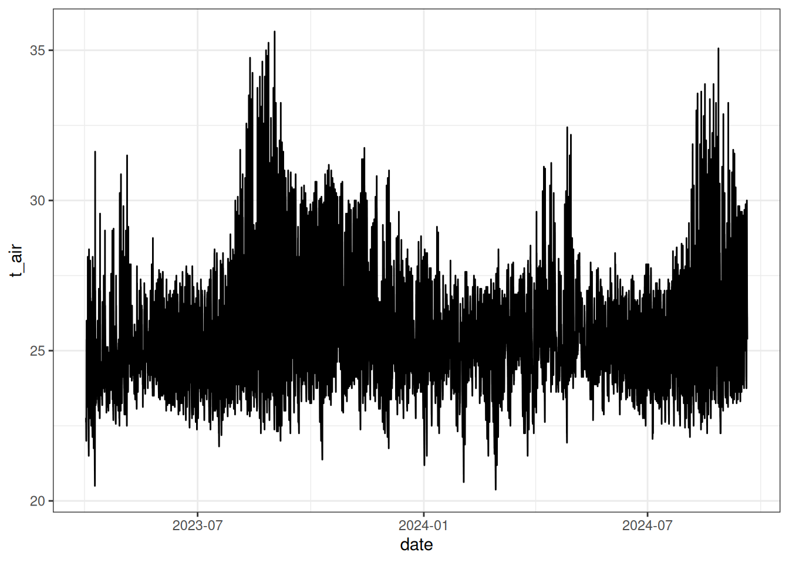
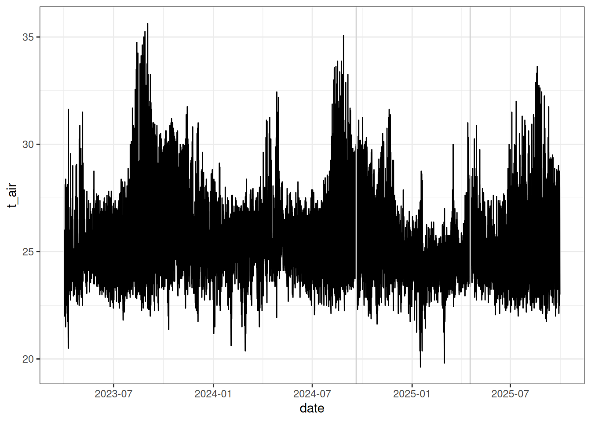

Code
library(tidyverse)library(tidyverse)
- Column names need harmonization.
- We need data check functions.
- An automatic reports could be produced for errors (discussed at which level). I think the best would be at the sensor-project level with maybe a snakemake and singularity worklow or a simple R workflow to automate it with outputs in a separate place and thus sensor project databases and a single common databases (maybe sqlight for big ones).
- Reading functions will depend on the sensors and will need to be made generic on the way they open and handle data.
- We need to had soil data or parameters for soil moisture.
- Date filtering should be used the earliest to save memory.
get_tomst_campaign <- function(
path,
metadata,
metadatac,
utc,
start_date,
stop_date
) {
files <- list.files(path, pattern = "data", full.names = TRUE)
names(files) <- list.files(path, pattern = "data", full.names = FALSE)
data <- files %>%
lapply(vroom::vroom,
col_select = 2:7,
col_types = c("c", rep("d", 5)),
col_names = F,
locale = locale(decimal_mark = ",")) %>%
bind_rows(.id = "file") %>%
mutate(X2 = gsub(".", "-", X2, fixed = TRUE)) %>%
mutate(X2 = as.POSIXct(X2)) %>%
mutate(X2 = as_datetime(X2)) %>%
rename(date = X2, tz = X3, t_soil = X4, t_surface = X5, t_air = X6, moisture = X7) %>%
separate(file, c("data", "sensornum"), convert = T) %>%
select(-data, -tz) %>%
mutate(date = date + utc*60*60) %>%
filter(as_date(date) >= start_date) %>%
filter(as_date(date) < stop_date)
metadata <- readxl::read_xlsx(metadata) %>%
select(TomstID, TomstSensorNum) %>%
rename(id = TomstID, sensornum = TomstSensorNum)
metadatac <- readxl::read_xlsx(metadatac) %>%
rename_all(tolower)
data <- metadata %>%
left_join(metadatac) %>%
full_join(data)
return(data)
}data <- get_tomst_campaign(
path = "data/Paracou/TOMST_ALT/20240920/",
metadata = "data/Paracou/TOMST_ALT/TOMST_ALT.xlsx",
metadatac = "data/Paracou/TOMST_ALT/20240920.xlsx",
utc = -3,
start_date = as_date("20230401"),
stop_date = as_date("20240920")
)
write_tsv(data, "tests/test_campaign.tsv")read_tsv("tests/test_campaign.tsv", n_max = 20) %>%
head() %>%
knitr::kable()| id | sensornum | field | defect | comment | date | t_soil | t_surface | t_air | moisture |
|---|---|---|---|---|---|---|---|---|---|
| 1 | 94223161 | TRUE | NA | NA | 2023-04-01 04:00:00 | 24.5000 | 23.6250 | 22.7500 | 2469 |
| 1 | 94223161 | TRUE | NA | NA | 2023-04-01 04:15:00 | 24.5000 | 23.6250 | 22.7500 | 2469 |
| 1 | 94223161 | TRUE | NA | NA | 2023-04-01 04:30:00 | 24.5000 | 23.5625 | 22.7500 | 2469 |
| 1 | 94223161 | TRUE | NA | NA | 2023-04-01 04:45:00 | 24.5000 | 23.5000 | 22.6875 | 2468 |
| 1 | 94223161 | TRUE | NA | NA | 2023-04-01 05:00:00 | 24.5000 | 23.5000 | 22.6250 | 2469 |
| 1 | 94223161 | TRUE | NA | NA | 2023-04-01 05:15:00 | 24.4375 | 23.5625 | 22.7500 | 2468 |
read_tsv("tests/test_campaign.tsv") %>%
filter(id == 1) %>%
ggplot(aes(date, t_air)) +
geom_line() +
theme_bw()
- To automate, by end for the moment with the three folders.
- This is heavy in memory so it should be automated with a wrokflow based on intermediary files.
data1 <- get_tomst_campaign(
path = "data/Paracou/TOMST_ALT/20240920/",
metadata = "data/Paracou/TOMST_ALT/TOMST_ALT.xlsx",
metadatac = "data/Paracou/TOMST_ALT/20240920.xlsx",
utc = -3,
start_date = as_date("20230401"),
stop_date = as_date("20240920")
)
data2 <- get_tomst_campaign(
path = "data/Paracou/TOMST_ALT/20250418/",
metadata = "data/Paracou/TOMST_ALT/TOMST_ALT.xlsx",
metadatac = "data/Paracou/TOMST_ALT/20250418.xlsx",
utc = -3,
start_date = as_date("20240920"),
stop_date = as_date("20250418")
)
data3 <- get_tomst_campaign(
path = "data/Paracou/TOMST_ALT/20250930/",
metadata = "data/Paracou/TOMST_ALT/TOMST_ALT.xlsx",
metadatac = "data/Paracou/TOMST_ALT/20250930.xlsx",
utc = -3,
start_date = as_date("20250418"),
stop_date = as_date("20250930")
)
data <- bind_rows(data1 %>% mutate(field = as.character(field)), data2, data3)
write_tsv(data, "tests/test_sensor-project.tsv")read_tsv("tests/test_sensor-project.tsv") %>%
filter(id == 1) %>%
ggplot(aes(date, t_air)) +
geom_line() +
theme_bw() +
geom_vline(xintercept = c(
as_datetime("2024-09-20 00:00:00"),
as_datetime("2025-04-18 00:00:00")
), col = 'lightgrey')
To test when using multples sensors and/or project and even sites.